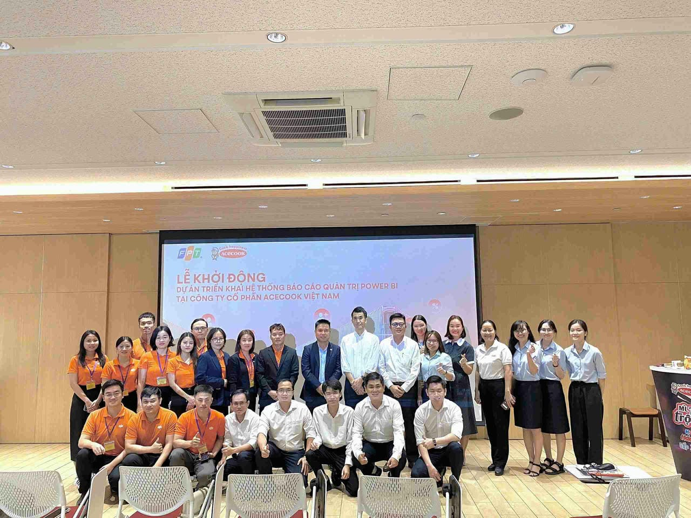
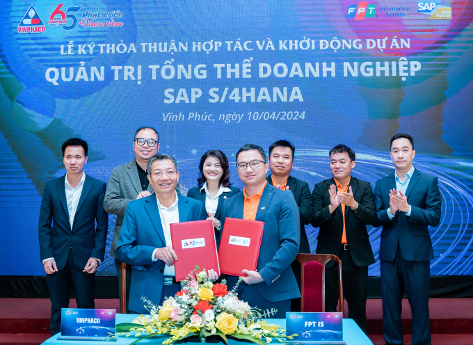

SAP & ERP · Master Data Governance · Integration · Applied AI
Tran Van Quang
I work across the SAP platform — ABAP and RAP development, master data governance and integration — then carry the same problems through to data platforms and applied AI. Working towards SAP Solution Architect.
About
SAP depth, carried through to data and AI
I am an SAP Technical Consultant with 3+ years on SAP S/4HANA. At Laidon Group I deliver the ABAP/RAP backend and the integration layer for SimpleMDG, a master data governance product on SAP BTP, across 10 customer implementations for US and EU clients. Before that, three years at FPT IS gave me the delivery grounding: around 60 custom objects across MM, SD, FI, FM, WM, PP and QM, integration through PI/PO, OData and SAP CI-DS, and performance work with CDS views and AMDP.
Alongside the SAP core I work on the data and AI side — a 300-million-record warehouse, the Microsoft Fabric platform I led at FPT IS, semantic models for BI, and AI delivery behind human review gates. I also build my own products: an ERP-style dropshipping platform, a warehouse visualisation SaaS, and a RAG search system with verified citations.
Where this is heading: depth in SAP and ERP first — the technical range that makes someone genuinely useful on an implementation — and from there towards SAP Solution Architect. The certifications follow that line, and so does the breadth into data engineering and applied AI, because an architect who cannot see past the SAP boundary is only half an architect.
Education
SAP Certifications
Languages
SAP & ERP core
ABAP, ABAP OO, RAP and ABAP Cloud across seven modules — reports, enhancements, Fiori and the performance work underneath. The depth an ERP expert is built on.
Master data & integration
SimpleMDG on SAP BTP, SAP Integration Suite, Event Mesh, PI/PO and CI-DS. Making systems agree with each other, and rejecting bad master data at the door.
Data & analytics engineering
Warehouses, ETL, Microsoft Fabric on a medallion Lakehouse, and semantic models — the governed layer that business decisions actually rest on.
Applied AI & presales
SAP Generative AI, RAG systems I build and measure myself, and AI coding agents run behind review gates. Plus the presales side: explaining the trade-offs honestly.
Where I am heading
SAP and ERP expertise first, then SAP Solution Architect — with enough range in data engineering and applied AI to design systems that do not stop at the SAP boundary.
Experience
Experience
Roles, and what each one actually involved. Every role opens into a full page.
Skills
Skills
What I work with, and what I have learned using it. Each one links to a page where I write about how I use it.
SAP Development
Integration & Data
Working & Leading
Proficiency at a glance
Self-assessed against what the role actually demands day to day.
Projects
Projects
Client work, grouped by where it was delivered. Open any card for the full story — context, decisions and what I would do differently.
SAP Technical Consultant. ABAP/RAP backend, SAP Integration Suite flows and performance work for SimpleMDG, Laidon's master data governance product on SAP BTP, across 10 US and EU customer implementations.
SimpleMDG Implementation for McKesson — SAP Integration Suite
Integration design for a US healthcare distributor — flows between SAP S/4HANA, SimpleMDG on BTP and surrounding systems, including an IDoc material inbound with 75 automated checks deployed error-free, and Event Mesh event handling.
Master Data Governance — Custom Business Objects & Integration Flows
Building custom RAP business objects for master data governance in S/4HANA, and the integration flows connecting SAP BTP with SAP ERP through the SAP Integration Suite.
SimpleMDG 2.0 — Platform Refactor to RAP
Refactoring the core of Laidon's master data governance product onto RAP for S/4HANA 2023 — 105 ABAP packages measured, a 411-object shared core rebuilt, and a 70-entity-set Business Partner OData API, deployed through an automated ADT REST pipeline.
SAP ABAP Developer, then Data Engineer and team lead. Ten S/4HANA projects across manufacturing, pharma, retail and public transport, plus the Acecook data warehouse and the internal Microsoft Fabric initiative.
SAP S/4HANA Integration — LOF
Data integration between SAP IBP, SAP S/4HANA and the Data Warehouse using SAP CI-DS — five transactional and ten master data flows — with ABAP RFC functions creating planned orders and purchase requisitions on arrival.
SAP S/4HANA Maintenance — Goldilocks Bakeshop, Inc.
My first international engagement — maintaining and extending S/4HANA for a Philippine retail chain, developing new FICO functionality, Web GUI reports for Fiori, and Adobe Forms.

Data Warehouse & Power BI — Acecook Vietnam
A ~100-table SQL Server warehouse holding 300 million records of sales-out data, fed by 80 SSIS ETL flows from SAP HANA, Oracle and Excel, with SSAS models serving Power BI.
Microsoft Fabric Data Platform — PB15, FPT IS HCM
Led the team that brought Microsoft Fabric into FPT IS HCM — a medallion Lakehouse with Data Pipelines, Dataflow Gen2 and Notebooks serving Power BI, plus internal training and presales support.
SAP S/4HANA Implementation — HURC1, HCMC Metro Line 1
The IT backbone for the company operating Ho Chi Minh City's first metro line. I led development of FI sub-system reports and modules for financial document management and daily ticket-sales detail.

SAP S/4HANA Private Cloud Implementation — Vinphaco
Custom PP/QM reports and modules for pharmaceutical production and quality control, including SAP standard logic simulated through BAPIs, plus OData APIs connecting SAP to external sales applications.
SAP S/4HANA Implementation — Kim Tin Group
Phase 2 of a USD 5 million digital transformation. Custom MM/WM reports and modules for material management, goods movement and warehouse operations, plus PI/PO integration with a third-party warehouse system.
Information Systems undergraduate. Deep-learning research with an international publication, plus student-union leadership.
Products
Products
Things I build outside client work — products and platforms of my own. Side projects that grew into real systems — each one opens into a full write-up.
Writing
Writing
Articles and notes — what I have learned, and the problems behind the systems I build.
Recognition
Awards, certifications & achievements
SAP's certification for building generative AI into SAP applications — AI Core, AI Launchpad, the Generative AI Hub, grounding and orchestration.
April 2026 Details Certification SAP Certified Professional — Solution Architect, SAP BTP SAPSAP's professional-level architecture certification for SAP Business Technology Platform — the one that moved me from "I build on BTP" to "I can design what gets built on BTP".
April 2026 Details Achievement Leader & Mentor — Data Integration Team FPT ISLed a team of four across data integration and warehousing projects — defining goals and KPIs, delivering on time, and building the team's capability in a domain none of us had shipped before.
2025 – 2026 Details Award FIS ES HCM Young Talent Award 2025 FPT IS — Enterprise Solutions HCMRecognition for young employees identified as high-potential contributors within FPT IS Enterprise Solutions HCM.
2025 Details Award Outstanding Employee of the Year 2024 FPT IS — ES HCM Technical Resource CenterAnnual recognition for outstanding contribution to the department's key projects, awarded at the end of my first full year at FPT IS.
2024 Details Achievement Secretary — Ho Chi Minh Communist Youth Union Faculty of Information Systems, UITOrganized and coordinated university-level programs, workshops and events engaging over 1,500 students — where I learned to run a team three years before I was asked to lead one at work.
2021 – 2024 Details Award "Student with 5 Good Criteria" — University Level University of Information Technology, VNU-HCMA national title of the Vietnam Students' Association, awarded at university level in two consecutive years across five criteria — ethics, study, fitness, volunteering and integration.
2021 & 2022 Details Certification SAP Certified Associate — Data Analyst, SAP Analytics Cloud SAPSAP's associate-level certification for SAP Analytics Cloud — modelling, stories, planning and connectivity — taken the day after C_ABAPD.
April 2026 Details Certification SAP Certified Associate — Back-End Developer, ABAP Cloud SAPSAP's associate-level certification for ABAP Cloud back-end development — the RAP model, CDS, ABAP OO, and the clean-core extensibility rules.
April 2026 DetailsPublication
A Classification Method based on Concatenation Features for Diagnosing Skin Diseases
Contact
Let's talk
Open to SAP technical consulting, ABAP and RAP development, and data integration work. The fastest way to reach me is email.